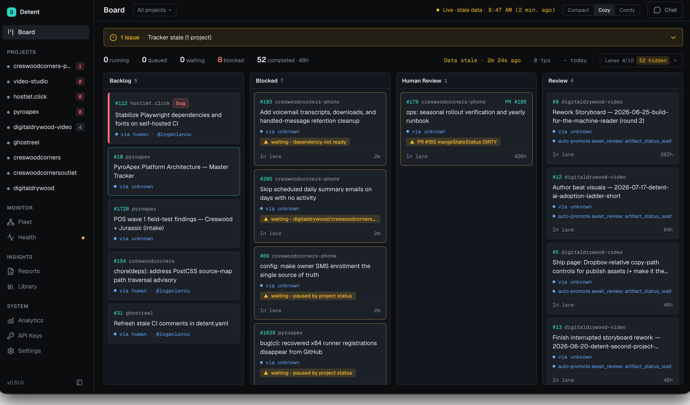

Status-driven agentic orchestration · one Go binary
You write the issue.
The gates decide when it lands.
Mark an issue Todo. Detent claims it, works it in an isolated worktree, runs your validation gate, opens a PR, and merges through a serialized train — only when your gates clear.
live
3 running1 queued1 held at gate52 completed · 48h
tokens 41% · budget $6.20/$25 · rate ok
TODO2
#214 detent
Rotate lease on tracker stall
#209 hostlet
Add .rpm smoke test to release CI
IN PROGRESS2
#207 detent
OAuth token rotation for tracker auth
● agent working · 12m
#198 pyroapex
POS wave 1 intake parser
● make check running
HUMAN REVIEW1
#196 detent · PR #201
Checksum-verified self-update
▲ held — gate: approval label
⟨ the detent — released only by you ⟩
REWORK1
#191 ghostreel · PR #195
Refresh stale CI comments
↺ 2 review threads unresolved
MERGING1
#188 detent · PR #193
detent doctor: token scope probe
● train: rebased, CI watch 4/6
DONE52
#186 detent
Winget manifest for 0.51
✓ merged · green
+51 more · 48h
02 · The inversion
A system, not an agent.
Autonomy-first tools put the intelligence in the agent and ask you to supervise it. Detent puts the intelligence in your spec and supplies the discipline. Same task, two interaction models:
“add OAuth token rotation” — autonomy-first assistant
→ Starts as a prompt. The agent picks a plan.
→ You review the plan, inspect partial edits.
→ It misses the migration; you redirect.
→ It skips tests; you redirect again.
→ You are the supervision loop.
“add OAuth token rotation” — Detent
→ Starts as an issue: storage change, CLI behavior, migration, rollback, tests.
→ Worker executes the contract in an isolated worktree.
→ Produces a reviewable PR.
→ Does not merge until the gates are green.
→ Your process runs. You read one PR.
03 · How it works
Your lanes. Your gates between them.
Todo──
In Progress─◃─
Human Review─◃─
Rework──
Merging─◃─
Done
◃ = a gate you defined · lanes are workflow-defined too — these six are ours
1 — you write the contracts
A checked-in detent.yaml (states, gates, scheduling, leases) plus a portable WORKFLOW.md agent contract. Local overrides stay gitignored.
2 — you mark an issue Todo
Detent claims it, creates an isolated Git worktree from your checkout, dispatches a Codex agent with the contract, moves the issue to In Progress.
3 — the agent works
In its own branch. Runs your validation gate — default make check + CI — and opens or updates a PR.
4 — gates decide
Promotion waits in Human Review, waits in lane, requires a current-head automated review, or needs linked PR + green CI + quiet time. Unresolved feedback → Rework.
5 — the train merges
Serialized: one rebase, CI-watch, and merge at a time. Concurrent candidates never invalidate each other's CI. Then: Done.
6 — one host, many repos
A global.yaml runs multiple projects with weights, priority, pause, and fair scheduling — live on the dashboard and TUI.
also in the contract — Detent can log the bugs it finds as issues, gate them like any other work, and ship the fix. Whether that loop runs hands-off is project config, not product opinion.
04 · The merge train
What lands is always green.
The differentiator nobody else in the matrix has. Train width is yours to configure — we keep ours at one candidate at a time — so ten parallel agents never race each other's CI.
PR #204 waits
PR #199 waits
→
rebase PR #193
→
CI watch · 4/6 checks
→
merge
→
main ✓ green
width: 1 — our config. yours to set.
05 · The operator surface
The board stays honest.
Live counts, running agents, token / budget / rate-limit state, board flow, timelines. “In progress” means an agent is actually working.

$ detent tui
detent · 8 projects · 3 running · 1 held · budget $6.20/$25
▸ #207 detent In Progress agent 12m make check …
▸ #196 detent Human Review held: approval label
▸ #188 detent Merging train: CI watch 4/6
And a terminal UI for people who live in tmux — same lanes, same counts, zero browser.
06 · Contracts, shown
Config you can read beats adjectives.
Two files, checked in. The machine contract and the agent contract. You can keep reading by hand too; nobody will revoke your keyboard.
detent.yaml
tracker:
mode: projectv2 # or status-field / labels
states: [Todo, In Progress, Human Review,
Rework, Merging, Done]
gates:
validate: make check
review: automated # current-head PR review
merge: ci_green + quiet 10m
scheduling:
parallel: 4
lease: 30m
retries: 2
WORKFLOW.md
# Agent contract
1. The issue is the spec. Do not exceed it.
2. Work only in the assigned worktree
and branch.
3. Run `make check` before every push.
4. Open a PR linking the issue. Unresolved
review feedback returns you to Rework.
5. Never merge. The train merges.
07 · Proof
It ships itself.
digitaldrywood/detent-orchestration is Detent's own production config. It dispatches the agents that build Detent. Copy it as a template for your first project.
Copy the template ↗
08 · One host, many repos
Fleet scheduling from a single binary.
PROJECTWEIGHTPRIORITYSTATERUNNING
detent3highactive2
pyroapex2normalactive1
hostlet1normalactive0
ghostreel1lowpaused—
Weights, priority, pause, fair scheduling — governed by one global.yaml. Budget caps and rate-limit state live on the dashboard.
09 · Install
One CGO-free binary. No service to stand up.
macOSLinuxWindowsSource
$ brew install digitaldrywood/tap/detent
$ detent doctor # preflight: gh, codex, token scope
$ detent up # claim the first Todo
REQUIREMENTS
· Codex CLI, signed in to your ChatGPT plan
· gh assumed present
· GitHub token scoped to your tracker mode
· Go 1.26+ for source builds only
also: go install · winget · scoop · .deb · .rpm · or copy a single file
MIT licensed. Free. Self-hosted; no vendor control plane. You bring the model cost. The intelligence is your config; Detent is the orchestrator that runs it.